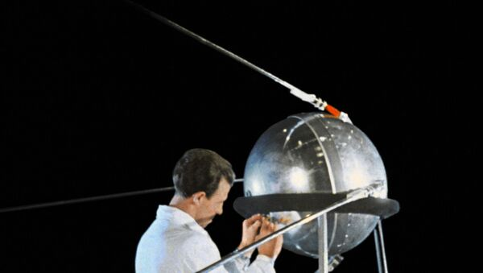

O surgimento da internet teve relação com a disputa tecnológica travada entre os Estados Unidos e a União Soviética durante o período da Guerra Fria. No contexto da corrida espacial, os soviéticos lançaram Sputnik — o primeiro satélite artificial — para o espaço. Esse evento fez com que o governo norte-americano desenvolvesse um projeto que resultaria na criação da internet.

"O Sputnik-1 foi o triunfo de uma política centralizada em direção a um determinado objetivo, e isso fez com que a URSS conseguisse uma vitória num primeiro momento." — Shozo Motoyama, físico e historiador da USP
Em 1958, surgiu a Advanced Research Projects Agency (Arpa), atualmente conhecida pela sigla Darpa. Essa agência estabeleceu um programa para o desenvolvimento de um sistema que permitisse o envio de informações e dados importantes entre os centros militares e de pesquisa e o Pentágono. Além disso, pensava-se em usá-lo para proteção e defesa do país em caso de uma guerra nuclear.
O projeto em questão realizado pela Arpa foi nomeado de Arpanet e conduzido por Robert Taylor e Lawrence Roberts, e ainda contou com estudos realizados por inúmeros outros cientistas. Na época foi usada a Wide Area Networks (WAN) como tecnologia para a transmissão dos dados.


A Arpanet foi inaugurada em 1969, e, na época, havia apenas quatro computadores nos Estados Unidos capazes de suportar o envio de dados por essa rede. Na ocasião, a mensagem foi enviada de um computador da Universidade da Califórnia, em Los Angeles (UCLA), para outro computador no Instituto de Pesquisa Stanford (SRI), em Menlo Park, também na Califórnia.
O teste inicial seria realizado com o envio da mensagem “log win”, mas o computador em Stanford não suportou a operação e travou quando recebeu a letra “g”. Um segundo teste, realizado momentos depois, teve sucesso. A partir daí, uma conexão permanente se estabeleceu entre UCLA e SRI.
Voltar